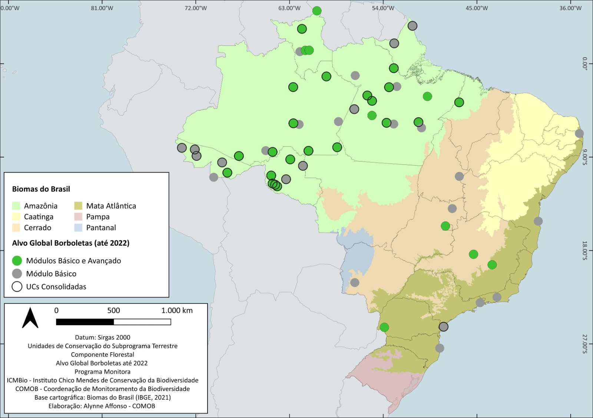
4 Borboletas frugívoras
Isabela Freitas Oliveira1-2, Arlindo Gomes Filho3 & Onildo João Marini Filho1
Centro Nacional de Pesquisa e Conservação da Biodiversidade do Cerrado e Restauração Ecológica - CBC
Instituto Chico Mendes de Conservação da Biodiversidade – ICMBio
Parque Nacional de Brasília
Via Epia, BR-450, Km 8,5
70635-800 Brasília, DFCoordenação de Monitoramento da Biodiversidade - COMOB
Instituto Chico Mendes de Conservação da Biodiversidade – ICMBio
Complexo Administrativo EQSW 103/104 s/n
70670-350 Brasília, DFCentro Nacional de Pesquisa e Conservação de Aves Silvestres – CEMAVE
Instituto Chico Mendes de Conservação da Biodiversidade – ICMBio
BR-230 Km 10
Floresta Nacional da Restinga de Cabedelo
58108-012 Cabedelo, PB
Como citar: Oliveira, I. F.; Gomes-Filho, A. G.; Marini-Filho, O. J. Borboletas frugívoras. In: Programa Nacional de Monitoramento da Biodiversidade – Programa Monitora, Subprograma Terrestre, componente Florestal. Relatório 2014-2022. Instituto Chico Mendes de Conservação da Biodiversidade, Brasília, 2024.
Os insetos estão entre os organismos mais diversos e ameaçados do mundo (Cardoso et al. 2020; Wagner 2020; Janzen & Hallwachs 2021). Entender como essa diversidade está distribuída no tempo e no espaço é crucial, visto que muitas espécies estão sendo extintas antes mesmo de serem descobertas pela ciência (Eggleton 2020; Liu et al. 2022). O Brasil, um país extenso e megadiverso, conta com poucos projetos de longo prazo (mais de cinco anos) voltados a investigar padrões de diversidade locais e regionais, especialmente em grupos de invertebrados como insetos (Costa et al. 2020). A maioria das pesquisas abrange escalas locais e curtos períodos de tempo (Ribeiro et al. 2010; Graça et al. 2016; Beirão et al. 2017; Araújo et al. 2020; Oliveira et al. 2021; Bellaver et al. 2023; Brito Freire et al. 2022), contribuindo significativamente para a compreensão de padrões de diversidade específicos, mas ressaltando a importância da implementação de projetos de longa duração em diversas áreas do país.
Nas últimas décadas, as borboletas frugívoras têm sido utilizadas como organismos modelo em monitoramentos de fauna em diversos países da região tropical (Hughes et al. 1998; Molleman et al. 2006; De Vries et al. 2012; Aduse-Poku et al. 2012; Nyafwono et al. 2014; Van Swaay et al. 2015; Freitas et al. 2024). A seleção deste grupo se deve à sua grande diversidade e significância ecológica, aliada à facilidade de amostragem por meio de armadilhas atrativas (De Vries & Walla 2001; Freitas et al. 2014). O uso dessas armadilhas possibilita a amostragem simultânea em várias áreas, padronizando o esforço amostral e reduzindo a chance de viés nos dados. Além disso, as borboletas frugívoras são altamente sensíveis a alterações ambientais, o que as torna indicadoras valiosas de perturbações nos habitat (Bonebrake et al. 2010; Oliveira et al. 2018). Essas transformações ambientais em escala local ou regional podem influenciar nas variações no número de espécies e indivíduos das borboletas, bem como nas mudanças de composição da comunidade (Oliveira et al. 2023). Assim, devido ao seu curto ciclo de vida, estas mudanças na comunidade de borboletas são observadas relativamente rápido. Outros fatores determinantes para a escolha de borboletas frugívoras em estudos de monitoramento são a relativa facilidade na identificação e sua boa resolução taxônomica, quando comparadas a outros grupos de insetos.
Neste capítulo, serão apresentados os resultados gerais da aplicação do protocolo básico de borboletas frugívoras em unidades de conservação (UCs) federais do Programa Monitora.
4.1 Métodos, implementação e validação protocolar
Os métodos de amostragem das borboletas frugívoras seguiram o Roteiro Metodológico do Programa Monitora (Nobre et al. 2014) e uma breve descrição geral dos procedimentos adotados em campo é apresentada no capítulo 2 deste relatório.
4.2 Resultados
O protocolo básico de amostragem de borboletas frugívoras, com identificação taxonômica no nível de tribo, foi aplicado em 50 UCs1, durante o período de 2014 a 2022, Dessas, 31 (62%) já estão consolidadas, isto é, com três ou mais EAs em operação. O protocolo avançado de borboletas frugívoras foi aplicado, em algum momento, em 31 UCs, embora parte dos dados ainda aguarde validação (Figura 4.1).
Após a correção, limpeza e verificação dos dados foram contabilizadas 85.386 borboletas frugívoras capturadas de 2014 a 2022. Desse total, 915 indivíduos (1%) foram registrados como ‘NA’ em sua tribo, sem a chance de verificação por falta de fotografias. Assim, 84.471 indivíduos foram identificados a nível de tribo pelos monitores. Na Amazônia, foram capturados 76.308 indivíduos, no Cerrado 6.378 e na Mata Atlântica 2.700 indivíduos.
O esforço amostral de borboletas frugívoras vem aumentando desde o início da implementação do Programa Monitora (exceto em 2020). Entre 2014 e 2019, o esforço amostral aumentou linearmente, tendo atingido um total de cerca de 17.152 armadilhas-dia em 2019. Em 2020, ano com maior impacto da pandemia de Covid-19, houve uma queda de 74% em relação ao ano anterior. No entanto, em 2021, o esforço amostral ainda não havia se recuperado totalmente, tendo voltado a crescer apenas em 2022, com um aumento de 15% em relação a 2019 (Figura 4.2).
De maneira geral, observou-se que o número de indivíduos amostrados acompanhou o esforço amostral, havendo um aumento na abundância de borboletas com o aumento do esforço amostral. Porém, os últimos anos apresentaram uma abundância menor em relação ao esforço (Figura 4.2). Ao todo, foram capturados 85.386 indivíduos de borboletas, com um esforço amostral de 90.320 armadilhas/dia no período de 2014 a 2022 (Figura 4.2).
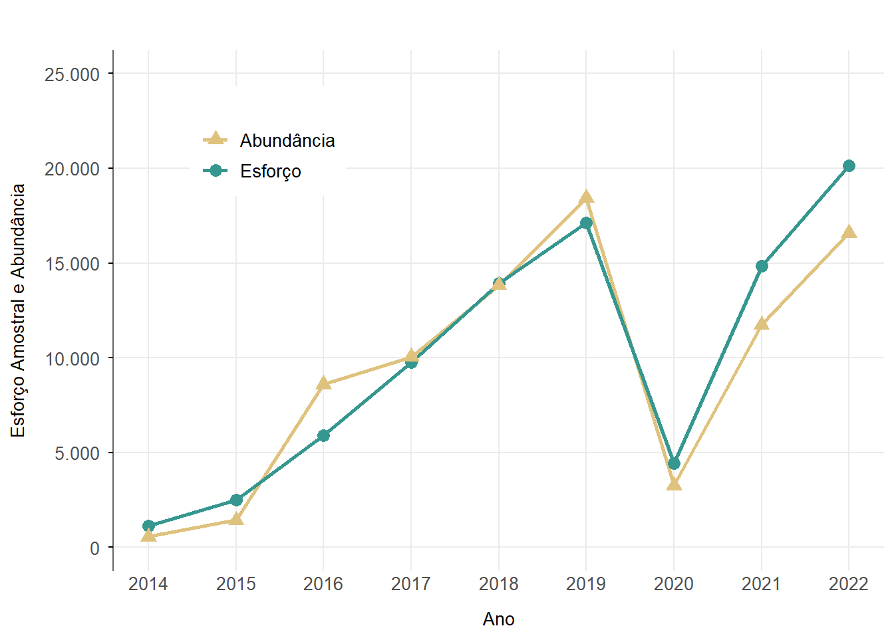
4.2.1 Regiões climáticas
Os períodos de amostragem propostos no protocolo do Programa Monitora para borboletas frugívoras na Amazônia seguem a mesma lógica aplicada para as regiões Central e Sudeste do Brasil, onde há alta abundância populacional e maior diversidade de espécies de borboletas frugívoras no final do período de chuvas intensas e no período seco (Barlow et al. 2007; Checa et al. 2009; Ribeiro et al. 2010). No entanto, há algumas exceções que precisam ser avaliadas caso a caso. Os períodos de amostragem para as regiões amazônicas apresentados a seguir baseiam-se na caracterização climática associada ao padrão de chuvas em toda a Amazônia (Marengo et al. 2001; Sampaio et al. 2021). Com base na identificação dos padrões de chuva em cada região, foram definidas seis regiões climáticas que englobam as Unidades de Conservação participantes do Programa Monitora (Figura 4.3). As regiões climáticas são: Sudoeste, Central, Leste, Sudeste, Norte e Noroeste. Isso permite determinar o período mais adequado para a amostragem (Tabela 4.1), considerando que o regime de chuvas é uma característica regional relevante para as borboletas frugívoras (Barlow et al. 2007; Checa et al. 2009). A definição deste período e sua manutenção ao longo do tempo possibilitam que as comparações interanuais sejam feitas considerando as populações mais abundantes daquele período.
| Unidade de Conservação | Região | Período de Amostragem |
|---|---|---|
| ESEC Rio Acre | Sudoeste | 2ª q. de abril à 1ª q. de junho |
| FLONA do Jamari | Sudoeste | 2ª q. de abril à 1ª q. de junho |
| PARNA da Serra da Cutia | Sudoeste | 2ª q. de abril à 1ª q. de junho |
| PARNA da Serra do Divisor | Sudoeste | 2ª q. de abril à 1ª q. de junho |
| PARNA de Pacaás Novos | Sudoeste | 2ª q. de abril à 1ª q. de junho |
| PARNA Mapinguari | Sudoeste | 2ª q. de abril à 1ª q. de junho |
| REBIO do Jaru | Sudoeste | 2ª q. de abril à 1ª q. de junho |
| RESEX Arapixi | Sudoeste | 2ª q. de abril à 1ª q. de junho |
| RESEX Barreiro das Antas | Sudoeste | 2ª q. de abril à 1ª q. de junho |
| RESEX Chico Mendes | Sudoeste | 2ª q. de abril à 1ª q. de junho |
| RESEX do Alto Tarauacá | Sudoeste | 2ª q. de abril à 1ª q. de junho |
| RESEX do Cazumbá-Iracema | Sudoeste | 2ª q. de abril à 1ª q. de junho |
| RESEX do Rio Cautário | Sudoeste | 2ª q. de abril à 1ª q. de junho |
| RESEX do Rio Ouro Preto | Sudoeste | 2ª q. de abril à 1ª q. de junho |
| RESEX Riozinho da Liberdade | Sudoeste | 2ª q. de abril à 1ª q. de junho |
| ESEC da Terra do Meio* | Central | 1ª q. de junho à 2ª quizena julho |
| FLONA de Tapajós | Central | 1ª q. de junho à 2ª quizena julho |
| PARNA da Amazônia | Central | 1ª q. de junho à 2ª quizena julho |
| PARNA do Jaú | Central | 1ª q. de junho à 2ª quizena julho |
| PARNA dos Campos Amazônicos* | Central | 1ª q. de junho à 2ª quizena julho |
| PARNA Nascentes do Lago Jari | Central | 1ª q. de junho à 2ª quizena julho |
| REBIO do Uatumã | Central | 1ª q. de junho à 2ª quizena julho |
| RESEX do Lago do Capanã Grande | Central | 1ª q. de junho à 2ª quizena julho |
| RESEX Riozinho do Anfrísio | Central | 1ª q. de junho à 2ª quizena julho |
| RESEX Tapajós-Arapiuns | Central | 1ª q. de junho à 2ª quizena julho |
| RESEX Verde para Sempre | Central | 1ª q. de junho à 2ª quizena julho |
| ESEC do Jari | Leste | 1ª q. de julho à 2ª q. de agosto |
| PARNA do Cabo Orange | Leste | 1ª q. de julho à 2ª q. de agosto |
| PARNA Montanhas do Tumucumaque | Leste | 1ª q. de julho à 2ª q. de agosto |
| REBIO do Gurupi | Leste | 1ª q. de julho à 2ª q. de agosto |
| RESEX Ipaú-Anilzinho | Leste | 1ª q. de julho à 2ª q. de agosto |
| RESEX Renascer | Leste | 1ª q. de julho à 2ª q. de agosto |
| PARNA do Juruena* | Sudeste | 1ª q. de abril à 2ª q. de maio |
| REBIO do Tapirapé | Sudeste | 1ª q. de abril à 2ª q. de maio |
| ESEC Maracá | Norte | 2ª q. de agosto à 1ª q. de outubro |
| ESEC Niquiá | Norte | 2ª q. de agosto à 1ª q. de outubro |
| PARNA do Monte Roraima | Norte | 2ª q. de agosto à 1ª q. de outubro |
| PARNA do Viruá | Norte | 2ª q. de agosto à 1ª q. de outubro |
| PARNA Serra da Mocidade | Norte | 2ª q. de agosto à 1ª q. de outubro |
| ESEC de Pirapitinga | Cerrado | 1ª q. de março à 2ª q. de abril |
| PARNA da Chapada dos Veadeiros | Cerrado | 1ª q. de março à 2ª q. de abril |
| PARNA da Serra da Bodoquena | Cerrado | 1ª q. de março à 2ª q. de abril |
| PARNA da Serra do Cipó | Cerrado | 1ª q. de março à 2ª q. de abril |
| PARNA de Brasília | Cerrado | 1ª q. de março à 2ª q. de abril |
| REBIO de Una | Mata Atlântica do NE | 1ª q. de agosto à 2ª q. de setembro |
| REBIO Guaribas | Mata Atlântica do NE | 1ª q. de agosto à 2ª q. de setembro |
| PARNA da Serra da Bocaina | Mata Atlântica do S e SE | 2ª q. de fevereiro à 1ª q. de abril |
| PARNA da Serra dos Órgãos | Mata Atlântica do S e SE | 2ª q. de fevereiro à 1ª q. de abril |
| PARNA do Iguaçu | Mata Atlântica do S e SE | 2ª q. de fevereiro à 1ª q. de abril |
| PARNA do Superagui | Mata Atlântica do S e SE | 2ª q. de fevereiro à 1ª q. de abril |
O número de UCs amostradas varia bastante entre as regiões (Figura 4.3). Atualmente, nenhuma UC da região Noroeste da Amazônia participa do Programa Monitora aplicando o protocolo de borboletas frugívoras. No entanto, seria de extrema importância implementar esse protocolo em pelo menos três UCs nessa região: ESEC Juami-Japurá, PARNA do Pico da Neblina e RESEX Auatí-Paraná. Outra região climática em que se faz necessária a inclusão de mais UCs para o protocolo de borboletas frugívoras é a sudeste amazônica. Esta região é de extrema importância por abrigar uma rica diversidade de espécies e estar constantemente ameaçada pelo agronegócio e mineração. Assim sugerimos a inclusão da ESEC Iquê, REBIO Nascentes da Serra do Cachimbo, FLONA Jamanxim, PARNA Rio Novo e FLONA de Carajás. Além dessas regiões, é importante também a inclusão de UCs mais ao norte da região climática sudoeste. Assim, sugere-se a inclusão de UCs no médio e baixo rio Juruá, como as RESEX Médio Juruá, Baixo Juruá e FLONA de Tefé.
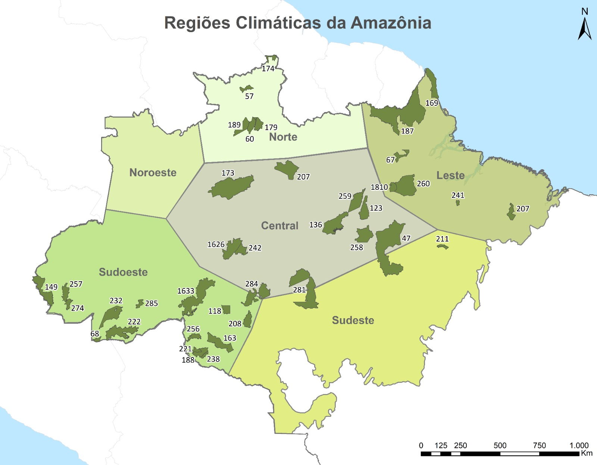
A região Sudoeste amazônica foi a que teve o maior número de UCs aplicando o protocolo de borboletas no período de 2014 a 2022, com 15 UCs amostradas: ESEC Rio Acre, FLONA do Jamari, PARNA da Serra da Cutia, PARNA da Serra do Divisor, PARNA de Pacaás Novos, PARNA Mapinguari, REBIO do Jaru, RESEX Arapixi, RESEX Barreiro das Antas, RESEX Chico Mendes, RESEX do Alto Tarauacá, RESEX do Cazumbá-Iracema, RESEX do Rio do Cautário, RESEX Rio Ouro Preto e RESEX Riozinho da Liberdade. Nesta região, as coletas foram realizadas em 48 EAs, contando com a colaboração de diversos monitores comunitários, habitantes das Reservas Extrativistas (Figura 4.4).
De 2014 a 2022 as amostragens de borboletas frugívoras na região climática central amazônica foram realizadas em 37 EAs em 11 UCs (Figura 4.4): ESEC da Terra do Meio, FLONA de Tapajós, PARNA da Amazônia, PARNA dos Campos Amazônicos, PARNA do Jaú, PARNA Nascentes do Lago Jari, REBIO do Uatumã, RESEX do Lago do Capanã Grande, RESEX Riozinho do Anfrísio, RESEX Tapajós-Arapiuns e RESEX Verde para Sempre.
Na região Leste amazônica, as amostragens se iniciaram em 2016. Até 2022, seis UCs e 17 EAs foram amostradas (Figura 4.4): ESEC do Jari, PARNA do Cabo Orange, PARNA Montanhas do Tumucumaque, REBIO do Gurupi, RESEX Ipaú-Anilzinho e RESEX Renascer.
Na região Sudeste amazônica, as amostragens de borboletas frugívoras também se iniciaram em 2016 e ocorreram em seis EAs, contemplando apenas duas UCs: PARNA do Juruena e REBIO do Tapirapé.
Finalmente, na região Norte da Amazônia, a aplicação do protocolo de borboletas frugívoras se iniciou em 2017, com cinco UCs e nove EAs amostradas até 2022 (Figura 4.4): ESEC de Maracá, ESEC de Niquiá, PARNA da Serra da Mocidade, PARNA do Monte Roraima e PARNA do Viruá.
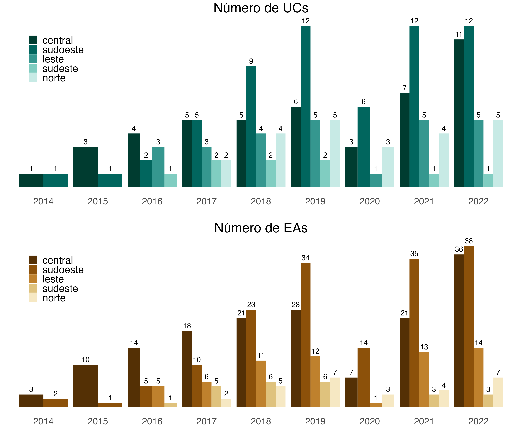
Para maior confiabilidade das informações apresentadas neste relatório, foi estabelecido um esforço amostral mínimo por ano para os biomas. Para cada região Amazônica foram consideradas amostragens suficientemente boas aquelas que tiveram esforço amostral de pelo menos 1.728 armadilhas*dia, equivalendo a nove EAs amostradas no ano, considerando duas campanhas amostrais por EA/ano.
4.3 Assinatura das tribos de borboletas ao longo dos anos
O Programa Monitora convencionou chamar a distribuição acumulada de frequências relativas da abundância de espécies identificadas ao nível de tribos de “assinatura de tribos” (ver relatórios do Programa Monitora 2014-2016 e 2014-2018). Essa assinatura de tribos de borboletas é uma forma gráfica de representar as proporções das tribos de borboletas de uma determinada comunidade presente naquele ano ou local. A adoção da assinatura ao nível de tribo levou em consideração que este é o nível taxonômico que permite fazer generalizações sobre as tendências observadas na comunidade de borboletas frugívoras (Freitas et al. 2024). Ela se torna efetiva quando comparada em longo prazo ou entre locais. Com a assinatura de borboletas, detectam-se variações nas tribos mais representativas daquela comunidade amostrada, sendo possível assim, realizar diagnósticos ambientais mais informativos para aquela região ou ano.
A abordagem que vem sendo utilizada no Programa Monitora considera a existência de diferentes níveis de associação entre as tribos de borboletas frugívoras e a estrutura das formações florestais, variando das florestas mais alteradas ou abertas até florestas mais adensadas e fechadas. O protocolo adotado pelo grupo de especialistas em borboletas consultado pelo ICMBio considerou que as tribos registradas estão relacionadas aos seguintes tipos de ambientes:
Florestas fechadas/preservadas: Brassolini, Haeterini e Morphini. Em situações de perturbação da floresta, a abundância relativa dessas tribos diminui consistentemente;
Florestas abertas/perturbadas (com abertura significativa no dossel): Ageroniini, Callicorini e Biblidini. As espécies dessas tribos são favorecidas por alterações na estrutura da floresta e suas abundâncias aumentam consistentemente com perturbações locais.
As tribos Preponini, Melanitini, Anaeini, Epicaliini, Epiphilini, Coeini e Satyrini não apresentam associação clara com ambientes florestais ou não demonstram tendência definida. A abundância dessas tribos pode aumentar ou diminuir em resposta a perturbações da floresta, como abertura de clareiras ou eventuais alterações no dossel.
Embora ainda pouco disseminada em trabalhos acadêmicos, a assinatura de tribos de borboletas é uma métrica versátil e biologicamente fundamentada que tem um papel importante no monitoramento de fauna. Esta é uma maneira viável de analisar e apresentar dados de um grupo com grande riqueza de espécies de uma região megadiversa, amostrado em uma escala tão ampla como a região Amazônica, ou pequenas como uma determinada UC.
4.3.1 Amazônia
Na região climática Sudoeste amazônica foram amostradas 36.918 borboletas frugívoras, sendo 354 delas não identificadas e desconsideradas nas análises. Assim, 36.564 indivíduos foram identificados em nível de tribo, sendo as mais abundantes: Satyrini (48%), Brassolini (11%), Epicaliini (9%) e Ageroniiini (9%). A região Sudoeste apresentou a maior proporção de tribos indicadoras de florestas abertas/perturbadas dentre as regiões da Amazônia. No caso, a tribo Ageroniini a foi responsável por esse padrão, especialmente em 2019. É importante salientar que, apesar da tribo Ageroniini ser classificada como uma tribo indicadora de florestas abertas/perturbadas, algumas espécies do gênero Hamadryas (e.g., Hamadryas alicia, H. belladonna, H. velutina) e do gênero Batesia estão geralmente presentes em florestas maduras e bem conservadas, como ocorre na RESEX Arapixi e UCs da região. Dessa forma, torna-se ainda mais necessária a aplicação do protocolo avançado nas UCs para que, com as fotografias dos indivíduos, seja possível separar espécies nas tribos que utilizam regularmente florestas abertas/perturbadas, como por exemplo Hamadryas februa, H. feronia, H. amphinome, H. arinome e Ectima iona, das espécies anteriormente citadas, habitantes de florestas fechadas/preservadas (Jenkins 1983).
Seguindo os padrões de diversidade da fauna e flora amazônicas (Ribas & Aleixo 2019; Luize et al. 2024), a região Sudoeste apresentou os maiores valores de números de indivíduos por esforço amostral. Apesar de tratar-se de contagem de indivíduos, é de se esperar que a riqueza e diversidade de espécies acompanhem este padrão (De Vries et al. 2016). O esforço realizado entre 2014 e 2016 nesta região foi inferior ao considerado adequado para caracterizar a abundância relativa de tribos, tendo este atingido a suficiência amostral somente a partir de 2017 (Figura 4.5).
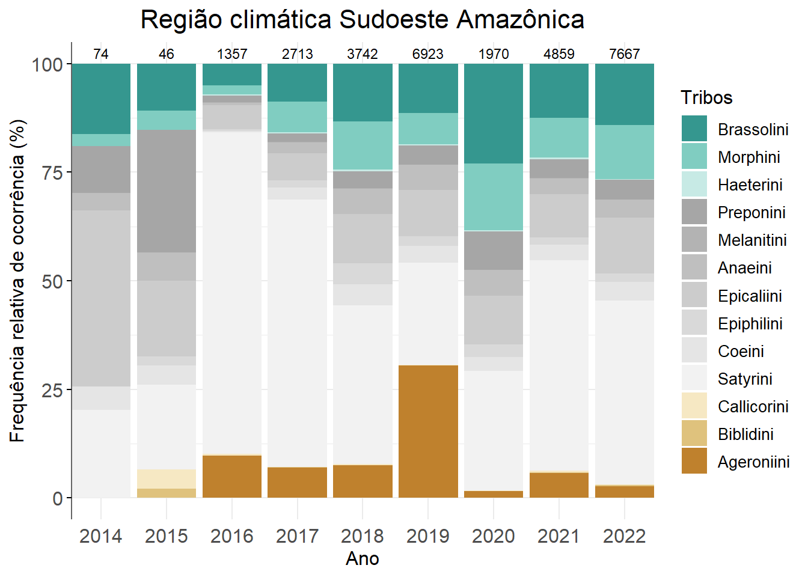
Na região climática central amazônica 23.088 borboletas frugívoras foram amostradas de 2014 a 2022. Visto que 174 não foram identificadas em nível de tribo, 22.914 indivíduos foram considerados nas análises. Desses, 41% pertencem à tribo Satyrini, a mais abundante da região, seguidos por 16% de Brassolini e 10% de Coeini. Os anos 2014 e 2020 tiveram um esforço amostral inferior àquele definido como mínimo aceitável para a região (i.e., menor que 18 campanhas = 1.728 armadilhas-dia). Assim, a interpretação dos resultados nesses anos deve ser feita com cautela.
As tribos Satyrini e Brassolini foram predominantes em praticamente todos os anos amostrados na região climática central amazônica. No entanto, em 2017 houve um aumento no número de Coeini, que foi a segunda tribo mais abundante (Figura 4.6). As tribos indicadoras de áreas abertas/perturbadas tiveram baixíssima representação (Figura 4.6).
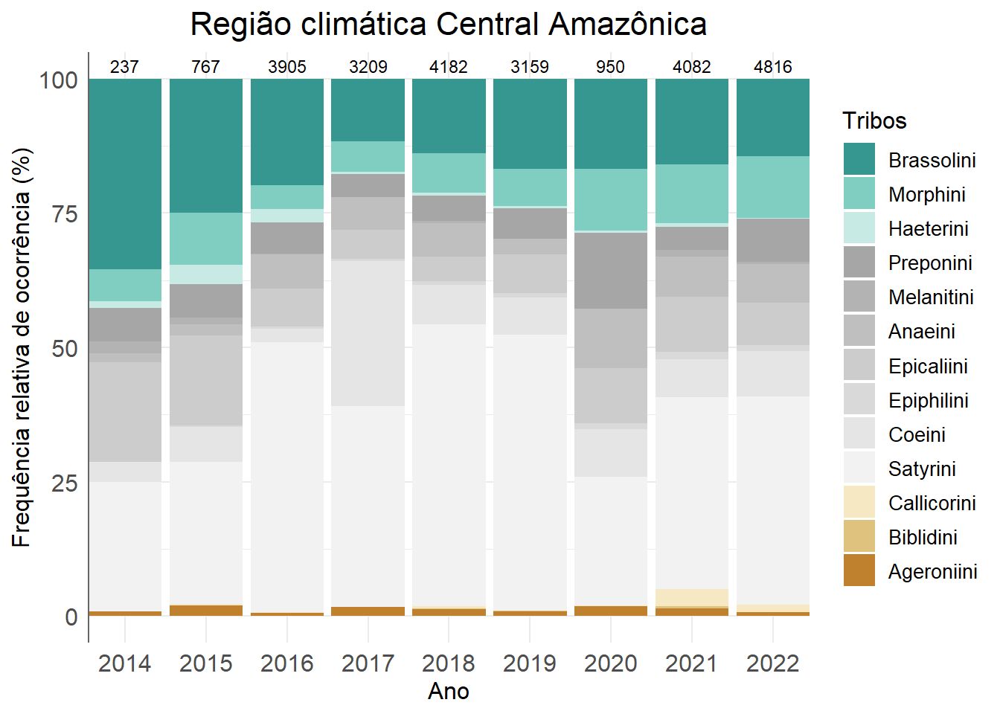
Na região climática leste amazônica foram amostradas 7.969 borboletas frugívoras, com 67 indivíduos não identificados em nível de tribo. Assim, dos 7.902 indivíduos de borboletas frugívoras identificados na região leste da Amazônia, 46% corresponderam à tribo Satyrini, a mais representativa, seguida por Brassolini (15%) e Morphini (11%). Os anos 2016, 2017 e 2020 tiveram amostragens abaixo do esforço adequado para representar a região. Apesar disso, o padrão da proporção da abundância das tribos foi bastante estável, com pouca variação entre anos (Figura 4.7).
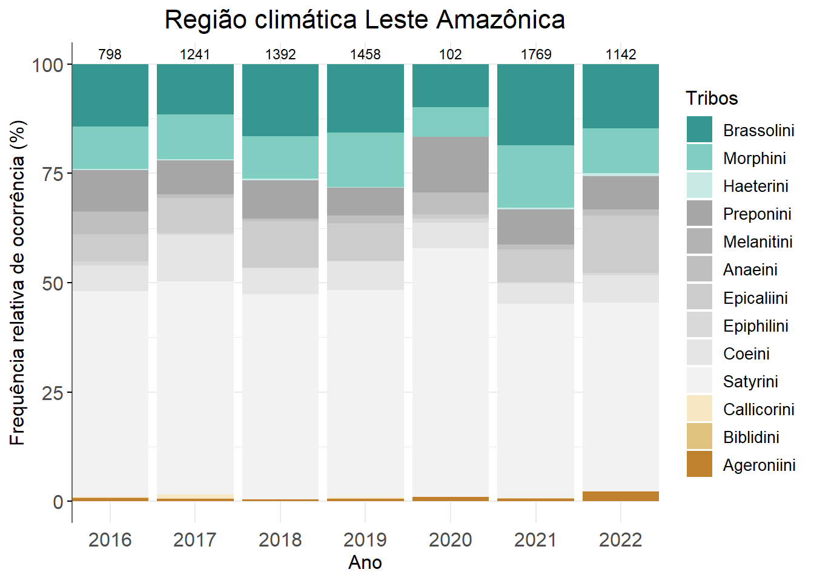
Na região climática sudeste amazônica a amostragem não atingiu o valor mínimo do esforço amostral estabelecido para as análises. Esta é uma região com somente duas UCs, PARNA do Juruena e REBIO do Tapirapé, aplicando o protocolo de borboletas frugívoras e se faz necessário o aumento no número de UCs participantes.
Ao todo, foram amostrados 5.042 indivíduos de borboletas frugívoras na região sudeste amazônica. Desses, 48 indivíduos foram descartados na análise por não terem sido identificados. Assim, 4.994 borboletas frugívoras foram identificadas em nível de tribo. Dentre as mais abundantes destacaram-se Satyrini (58%), Epicaliini (11%) e Morphini (11%). O padrão da proporção das tribos ao longo dos anos variou pouco de 2017 a 2022 (Figura 4.8), provavelmente pelo baixo número de UCs, visto que amostragens em diferentes UCs tendem a capturar diferentes padrões, mesmo numa mesma região (e.g., região sudoeste).
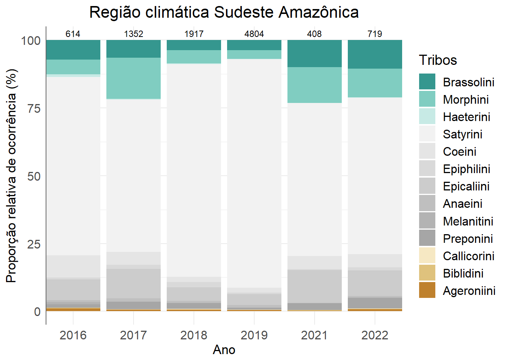
Na região climática norte amazônica o esforço mínimo para a representação da comunidade de borboletas frugívoras não foi atingido em nenhum ano. Uma das razões é a complexidade logística para a amostragem em algumas UCs do norte da Amazônia. Por exemplo, as amostragens no PARNA do Monte Roraima precisam ser feitas na forma de expedições, devido às dificuldades de acesso através da Terra indígena Raposa Serra do Sol, levando dias por terra ou com um alto custo utilizando aviões monomotores. Outro fator que influenciou a diminuição do número de EAs amostradas foi a invasão da ESEC Maracá por garimpeiros em 2019, com ameaças e roubo de equipamentos da UC. A ESEC Maracá era a única UC consolidada nao região Norte. Assim, é necessário se reestabelecer a amostragem na ESEC Maracá e aumentar o número de EAs implementadas no PARNA da Serra da Mocidade, na ESEC de Niquiá e no PARNA do Viruá.
Ao todo, foram amostradas 3.303 borboletas frugívoras nessa região. Dessas, 190 não foram identificadas em nível de tribo, tendo sido descartadas, de forma que 3.113 indivíduos identificados foram considerados na análise. Dentre as tribos mais abundantes destacam-se Satyrini, Brassolini e Preponini, com 55%, 15% e 6%, respectivamente.
O padrão da assinatura das tribos variou de 2017 a 2019, tendo se estabilizado de 2020 a 2022. Porém, a abundância de borboletas foi bastante influenciada pelo número insuficiente de estações amostrais, o que limita potenciais conclusões (Figura 4.9).
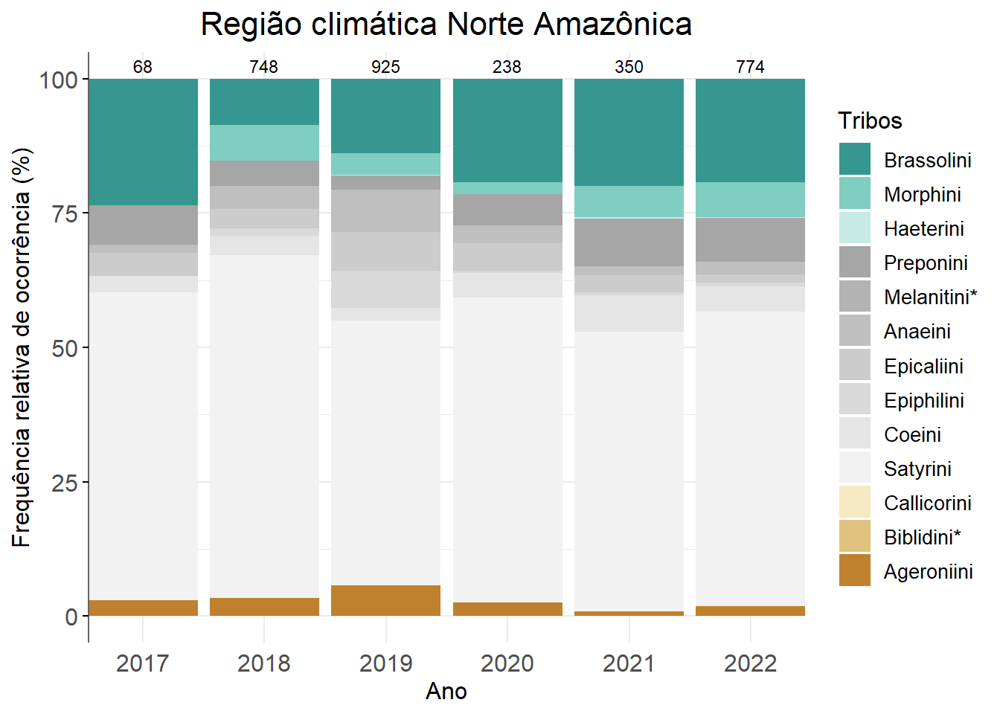
4.3.1.1 Abundância por região climática
4.3.2 Cerrado e Mata Atlântica
Até o momento, poucas UCs dos biomas Cerrado e Mata Atlântica aplicaram o protocolo de amostragem de borboletas frugívoras. Dessa forma, os resultados apresentados aqui requerem cautela na interpretação.
No Cerrado foram amostrados 6.378 indivíduos (67 deles não identificados em nível de tribo), sendo 6.311 considerados nas análises. As tribos mais representativas no Cerrado foram Satyrini, Ageroniini e Biblidini com 40%, 14% e 8%, respectivamente. É importante ressaltar que as amostragens no Cerrado foram feitas em ambientes mésicos, ou seja, em ambientes florestais úmidos imersos no ambiente savânico. Estes ambientes podem ser capões de mata ou matas ripárias. Dessa forma, é de se esperar que tribos indicadoras tanto de florestas fechadas quanto de florestas abertas sejam representadas.
Os padrões anuais apresentaram grandes variações na proporção das tribos indicadoras, especialmente de Brassolini, Morphini, Biblidini e Ageroniini (Figura 4.11).
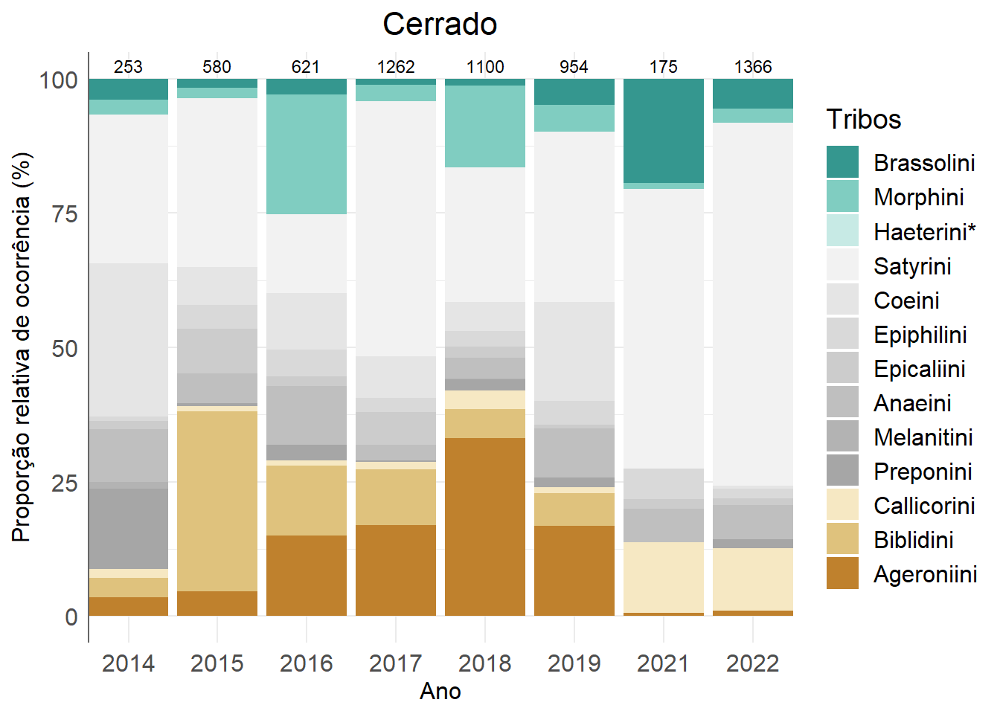
Na Mata Atlântica 2.700 borboletas frugívoras foram amostradas. Dessas, 16 não foram identificadaos no nível de tribo, de modo que 2.684 indivíduos amostrados foram considerados na análise. A tribo Satyrini foi a mais representativa, com 27% dos indivíduos, seguida por Anaeini, com 24% e Epicaliini, com 14%.
Houve uma grande variação das tribos entre anos, especialmente de Brassolini, Anaeini, Coeini e Satyrini (Figura 4.12). Verificou-se também grande variação no número de indivíduos, mesmo quando com um mesmo esforço amostral, indicando haver de fato diferenças na abundância entre regiões no bioma. O padrão das tribos do bioma reflete, principalmente, o padrão registrado no Parque Nacional do Iguaçu. Assim, é de extrema importância que as amostragens sejam feitas continuamente nas mesmas UCs e que, com a adesão de novas unidades de conservação da região ao programa de monitoramento, as amostragens nas UCs com protocolo de borboletas frugívoras já implementado sejam mantidas.
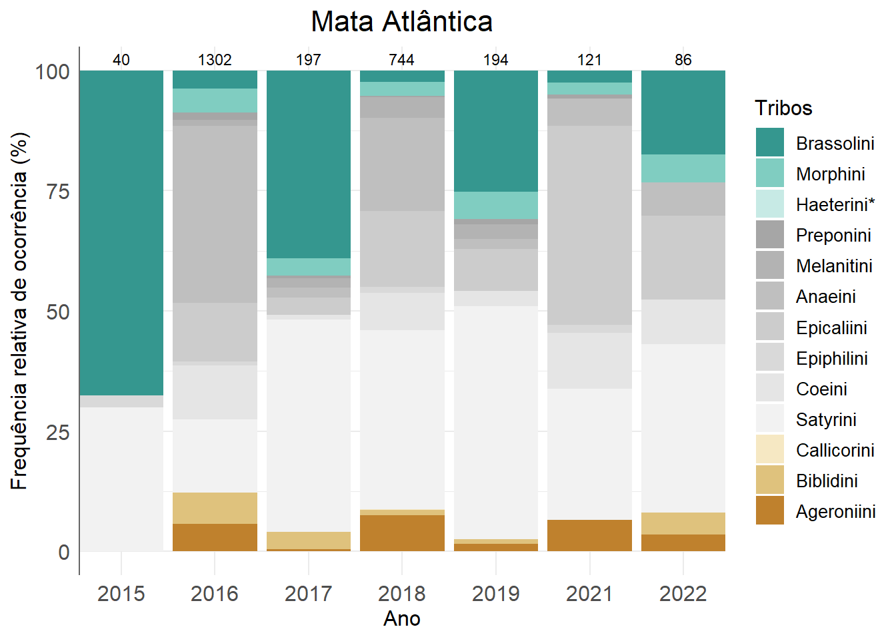
4.3.2.1 Abundância relativa por região
Cada região amostrada apresentou um padrão de assinatura de tribos de borboletas. De maneira geral, dentre as tribos indicadoras, o Cerrado apresentou uma proporção maior de borboletas indicadoras de florestas abertas/perturbadas, seguido por Mata Atlântica, sudoeste e norte da Amazônia (Figura 4.12). Como esperado, todas as regiões climáticas da Amazônia, tiveram uma proporção maior de borboletas indicadoras de florestas fechadas/preservadas (Figura 4.12).
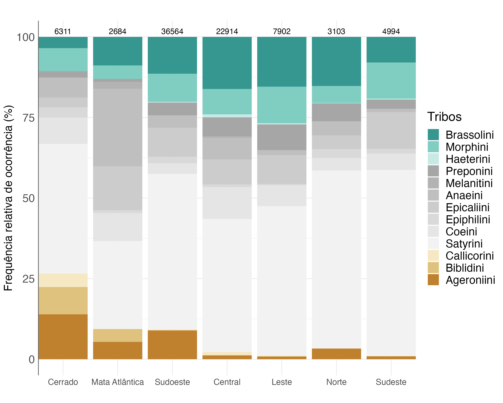
4.3.3 Índices de abundância de tribos
O uso de índices de abundância em ecologia e conservação visa gerar medidas que possam ser utilizadas na ausência de estimativas populacionais mais precisas. Geralmente, usam informações quantitativas derivadas de amostragens por área, transecções lineares ou por um certo esforço de captura, sendo uma poderosa ferramenta para se verificar o estado de conservação e acompanhar mudanças populacionais de espécies.
O programa de inventário e monitoramento de borboletas do Reino Unido, por exemplo, utiliza uma ficha de registros de ocorrências de borboletas focada nas espécies ameaçadas ou raras em sua área de ocorrência. Um objetivo chave deste programa é servir como sistema de alerta prévio, ao nível local, sobre as ameaças aos sítios importantes de ocorrência de populações de borboletas (Harding et al. 1995). A proposta original, iniciada em 1976, deveria durar cinco anos, porém, permanece ativa ainda hoje (Middlebrook et al. 2023).
O tradicional método conhecido como “Caminhada de Pollard” faz uso de transectos lineares para amostrar borboletas. O protocolo original consiste na caminhada ao longo de trilhas para a contagem padronizada de borboletas e cálculo de um índice simples, equivalente à soma da média das contagens semanais das espécies ao longo da estação de voo (Pollard et al. 1975; Pollard 1977). Esse método é adotado em monitoramentos de borboletas em vários países europeus (Van_Swaay_2022) e em projetos específicos nos EUA (Mattoni et al. 2001).
No Programa Monitora, para avaliar flutuações na abundância das tribos de borboletas ao longo dos anos, foi usado um índice considerando somente as tribos indicadoras de florestas fechadas/preservadas e abertas/perturbadas. Para isso, os indivíduos das tribos Brassolini, Morphini e Haeterini registrados em cada ano foram somados, com os totais resultantes representando conjuntamente as borboletas de florestas fechadas/preservadas. O mesmo procedimento foi feito para as borboletas de florestas abertas/perturbadas: Callicorini, Biblidini e Ageroniini.
4.3.3.1 Cálculo dos índices
Neste relatório, foram adotadas duas abordagens no cálculo dos índices de abundância. Na primeira, o índice de tendência populacional segue o princípio do Living Planet Index (LPI), no qual oscilações “populacionais” podem ser detectadas comparando-se o valor do índice de um dado ano ao valor do primeiro ano de ocorrência da “população” sob análise. Na segunda, o índice de variação populacional instantânea possibilita a detecção de flutuações de abundância de um ano em relação ao ano anterior.
O índice de abundância (i) tem como base o número acumulado de indivíduos (n) de cada tribo em cada ano (t) numa dada área. A partir do número de indivíduos registrados por ano (nt) para cada grupo de borboletas indicadoras, é feita uma correção, somando-se um valor muito pequeno para evitar a presença de zeros na matriz. Desta forma, é obtida a frequência absoluta corrigida (ft) = nt + 0,00001. Em seguida, para obtenção de um valor padronizado (fe), a frequência absoluta corrigida é dividida pelo esforço amostral (número de armadilhas * número de dias de amostragem). O índice de abundância (it) é calculado por meio da divisão da fe do ano específico (fet) pelo valor da fe do primeiro ano em que a “população” sob análise foi registrada ou primeira ocorrência (fe0). Considerando que a frequência corrigida apresenta grandes variações de abundância e esforço amostral entre anos, aplicou-se uma transformação logarítmica (log10 + 1).
Índice de tendência populacional - Considerou-se primeira ocorrência quando a abundância da “população” no ano foi ≥ 20 indivíduos. O índice de abundância da primeira ocorrência (i0) é padronizado como 1,0. Dessa forma, valores acima de 1,0 indicam um aumento e abaixo de 1,0 uma redução “populacional” em relação ao primeiro ano de ocorrência.
A seguir, um exemplo do cálculo desse índice de abundância para o terceiro ano de amostragem:
\[f_{3} = n_{3} + 0,00001\]
\[fe_{3} = f_{3} / \text{esforço} \, \text{anual}\]
\[i_{3} = log_{10} (fe_{3} / fe_{0}) + 1\]
Flutuações “populacionais” detectadas por meio dessa abordagem são apresentadas na Figura 4.14 a Figura 4.15.
Índice de variação populacional instantânea - Na segunda abordagem, o índice de abundância de um dado ano (it) é calculado por meio da divisão da fe do ano específico (fet) pelo valor da fe do ano anterior (fet-1), seguida também de uma transformação logarítmica (log10 + 1).
Exemplo da aplicação desse índice de abundância para o terceiro ano de amostragem:
\[f_{3} = n_{3} + 0,00001\] \[fe_{3} = f_{3} / \text{esforço} \, \text{anual}\] \[i_{3} = log_{10} (fe_{3} / fe_{2}) + 1\]
Esta abordagem pode revelar, por exemplo, o quanto uma “população” está se ‘recuperando’ de um declínio no ano anterior (Figura 4.17 a Figura 4.19).
Portanto, os resultados apresentados a seguir expressam a variação da abundância das borboletas frugívoras considerada de forma combinada, com algumas tribos sendo tratadas em conjunto, como um grupo indicador de cada tipo de ambiente: florestas preservadas e alteradas. Valores dos índices de abundância específicos para cada tribo por ano são apresentados no Apêndice G.
4.3.3.2 Regional Amazônica
Na primeira abordagem utilizada, os resultados obtidos para os grupos de borboletas indicadoras não foram uniformes nas diferentes regiões climáticas da Amazônia ao longo dos anos (Figura 4.14). Os resultados obtidos para os grupos de borboletas indicadoras não foram uniformes nas diferentes regiões climáticas da Amazônia ao longo dos anos. Enquanto nas regiões central, sudoeste e norte o índice de abundância indicou um aumento ou estabilidade na abundância das borboletas de florestas fechadas/preservadas, uma diminuição “populacional” foi indicada nas regiões leste e sudeste. Este é um resultado interessante, visto que as regiões sudeste e leste da Amazônia fazem parte do chamado “arco do desmatamento” e sofrem com os avanços de intervenções humanas como a pecuária, plantações de soja, construções de barragens, hidrelétricas e estradas (Fearnside 2022; Nickerson et al. 2022; Jakimow et al. 2023; Levy et al. 2023). Dessa forma, a diminuição de borboletas indicadoras de florestas fechadas/preservadas nessas regiões pode ser um indicativo da diminuição da cobertura florestal em nível regional, visto que as amostragens são executadas em UCs que não sofrem diretamente com estas ameaças. Porém, para que esta hipótese seja avaliada adequadamente faz-se necessário obter e incluir em futuras análises dados ambientais e climáticos na escala da região.
As tribos indicadoras de florestas abertas/perturbadas apresentaram, em sua maioria, redução “populacional”, especialmente após de 2020. Os únicos picos de aumento “populacional” deste grupo ocorreram em 2019, na região sudoeste da Amazônia, e em 2021, na região central. As regiões norte, leste e sudoeste (a partir de 2020) se destacaram pelas reduções e na região sudeste não foi obtido o número mínimo de 20 indivíduos para o cálculo do índice. Para entender este resultado serão necessárias análises mais refinadas utilizando imagens de satélite, dados climáticos e ambientais. No entanto, a diminuição populacional desse grupo deve, idealmente, ser avaliada num nível taxonômico mais fino, preferencialmente de espécie, para que a interpretação seja mais adequada, especialmente em relação à tribo Ageroniini.
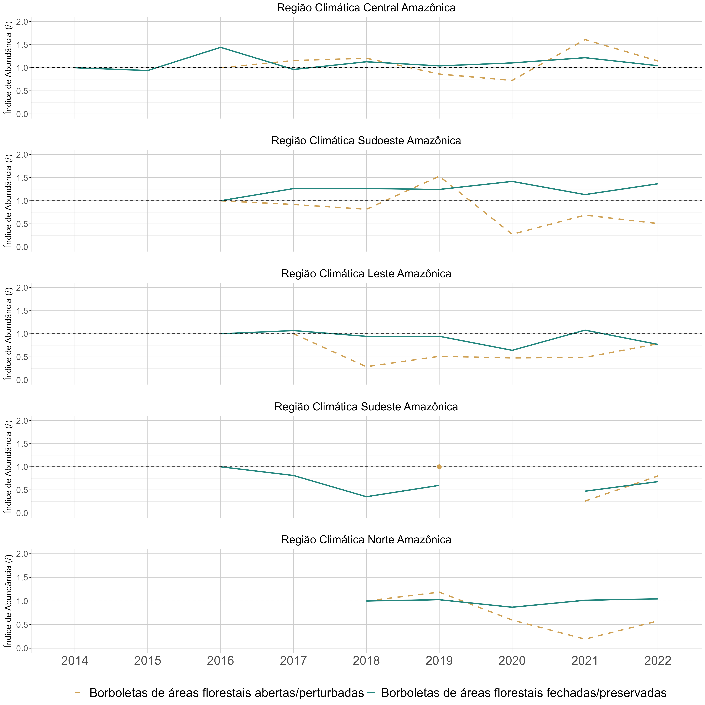
4.3.3.3 Cerrado
O Cerrado apresenta uma composição de tribos muito distinta dos biomas mais florestais, como Amazônia e Mata Atlântica (Figura 4.13). Os dados obtidos para este bioma apresentaram grandes variações entre anos (Figura 4.11) causados pela grande variação nas unidades de conservação amostradas a cada ano. Isto dificulta a determinação de padrões claros para o bioma.
O grande aumento observado em todas as populações de borboletas de florestas abertas e fechadas indica que o primeiro ano da série (2014) deve ter sido um ano um tanto atípico, com abundâncias abaixo da média, dado que todas as populações aumentaram nos anos seguintes (fig-ind-abund-cerrado). Alternativamente, é possível que os ciclos observados no Cerrado tenham um pulso mais longo, o que somente poderá ser comprovado com uma série histórica bem mais extensa do que a atual. No entanto, ressaltamos que a bioindicação obtida pela abundância dos grupos associados a florestas fechadas pode não ser a melhor para este bioma, dado que a tribo Haeterini não ocorreu nas amostragens e que as tribos Brassolini e Morphini são naturalmente pouco abundantes em florestas secas, cerradão e cerrado denso.
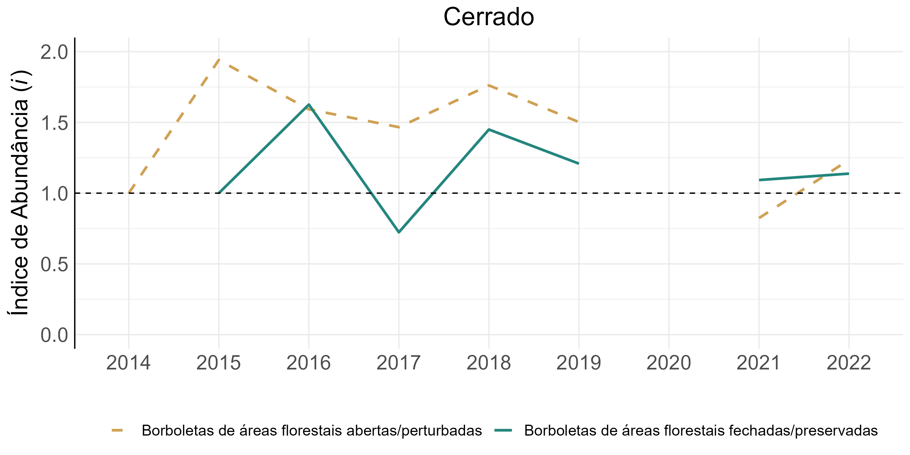
4.3.3.4 Mata Atlântica
O padrão de bioindicação para a Mata Atlântica é similar àquele observado para as diferentes regiões amazônicas, apesar de haver maior equitabilidade de distribuição das diversas tribos de borboletas (Figura 4.13). Não foram registradas espécies da tribo Haeterini nas UCs amostradas.
Os dados obtidos para as UCs da Mata Atlântica são muito influenciados pela alta captura obtida no PARNA do Iguaçu, que contribui com 74% da abundância total observada para o bioma. Unidades de conservação como o PARNA da Serra dos Órgãos, PARNA Serra da Bocaina e PARNA do Superagui têm registrado baixos números de borboletas frugívoras na maior parte dos anos, o que nos alerta para a necessidade de conhecer melhor as variações desta comunidade ao longo do tempo.
Apesar das UCs deste bioma não terem sido suficientemente amostradas, pode-se observar um aparente declínio na abundância das tribos indicadoras de florestas fechadas/preservadas, que se deu de forma contínua ao longo de todo o período de amostragem. Tal conclusão, no entanto, ainda carece de dados para ser confirmada. Já as tribos indicadoras de florestas abertas/perturbadas apresentaram flutuações drásticas, provavelmente devido a estocasticidade relacionada ao baixo número amostral (Figura 4.16).
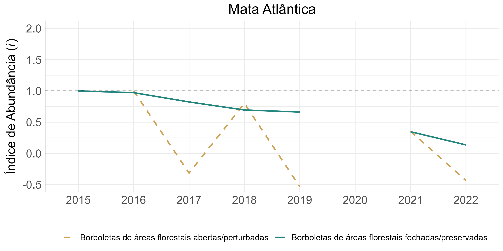
Na segunda abordagem utilizada para o índice de abundância, a análise de variações populacionais instantâneas, os valores de cada ano foram comparados ao valor do ano anterior. Na região climática sudoeste amazônica foi observada uma redução de Ageroniini (a única tribo representante das borboletas indicadoras de florestas abertas/perturbadas observadas na região) nos anos de 2017 e 2018, mas um aumento considerável da tribo em 2019. Devido a este grande crescimento populacional de Ageroniini e do esforço amostral na região em 2019 (2.122 indivíduos amostrados em 76 campanhas realizadas, com 38 EAs), o ano de 2020 apresentou uma redução drástica no índice, tanto devido ao baixo número de indivíduos de Ageroniini (n = 42), quanto à redução do esforço amostral para 26 campanhas (com 13 EAs). No ano de 2021 houve um aumento do índice em relação ao ano anterior, e uma pequena redução em 2022 (Figura 4.17).
As borboletas indicadoras de florestas fechadas/preservadas, por outro lado, seguiram o padrão inverso apresentado pelas borboletas indicadoras de florestas abertas/perturbadas, exceto em 2018, quando também sofreu uma redução do índice (Figura 4.17). Esta é uma dinâmica “populacional” esperada, visto que as borboletas indicadoras de florestas fechadas e florestas abertas possuem requerimentos ambientais e climáticos contrastantes.
As borboletas indicadoras de florestas fechadas/preservadas, por outro lado, seguiram o padrão inverso apresentado pelas borboletas indicadoras de florestas abertas/perturbadas, exceto em 2018, quando também sofreu uma redução do índice (Figura 4.17). Esta é uma dinâmica populacional esperada, visto que as borboletas indicadoras de florestas fechadas e florestas abertas possuem requerimentos ambientais e climáticos contrastantes.
Na região climática central amazônica, as tribos indicadoras de florestas abertas/perturbadas, representadas somente por Ageroniini, tiveram um aumento populacional em 2017 em relação a 2016, com uma subsequente redução nos anos de 2018 e 2019 (Figura 4.17). A partir de 2020, houve um pequeno aumento em relação ao ano anterior e em 2021 esta tribo apresentou um grande aumento populacional. Porém, no ano seguinte, houve uma grande redução populacional desse grupo de borboletas (Figura 4.17). No caso das borboletas de florestas fechadas/preservadas, notou-se uma oscilação de crescimento e redução populacional ao longo dos anos, com crescimento nos anos de 2020 e 2021 (Figura 4.17). Os grupos indicadores tiveram o mesmo padrão de crescimento populacional em relação ao ano anterior em 2019, 2020 e 2021, ambos com diminuição populacional em 2022 (Figura 4.17).
Na região climática leste amazônica as tribos indicadoras de florestas fechadas e abertas apresentaram padrões de crescimento e diminuição populacional similares ao longo dos anos, com exceção de 2022, quando borboletas indicadoras de florestas abertas tiveram um aumento populacional em relação ao ano anterior, enquanto as borboletas indicadoras de florestas fechadas apresentaram uma redução (Figura 4.17). Apesar dos mesmos padrões, as proporções das mudanças populacionais de um ano para o outro entre os dois grupos indicadores foram diferentes.
A região climática sudeste amazônica não apresentou, em nenhum ano amostrado, o número mínimo de borboletas indicadoras de florestas abertas/perturbadas para que o índice fosse calculado (Figura 4.17). No entanto, as borboletas indicadoras de florestas fechadas/preservadas mostraram uma oscilação populacional entre os anos (Figura 4.17).
Na região climática norte amazônica os grupos indicadores apresentaram um número mínimo de indivíduos para o cálculo do índice apenas a partir de 2018. Os padrões dos dois grupos foram congruentes em todos os anos, exceto em 2022, quando a abundância de borboletas indicadoras de florestas abertas/perturbadas aumentou em relação ao ano anterior, e as borboletas indicadoras de florestas fechadas/preservadas mostraram uma pequena redução (Figura 4.17).
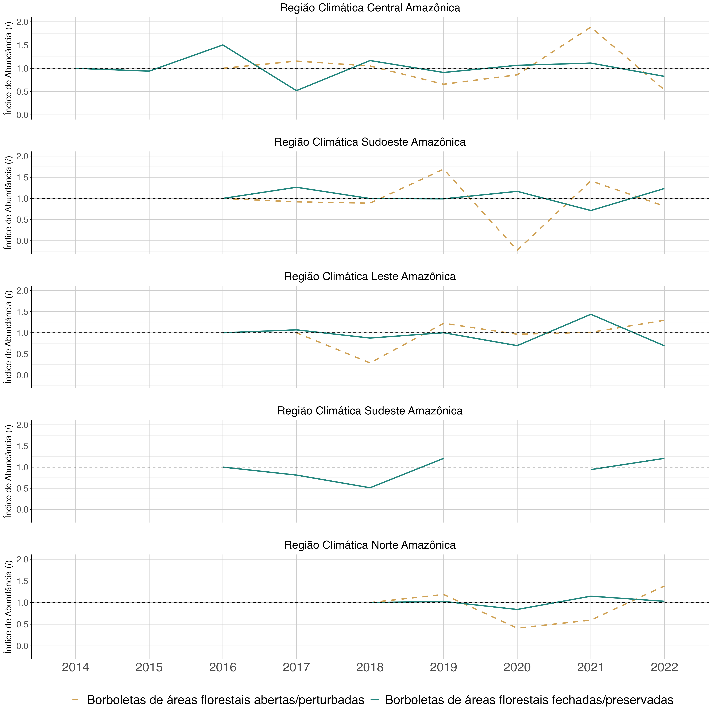
A variação instantânea observada nas populações das tribos de borboletas indicadoras de florestas fechadas e abertas no Cerrado mostram variações grandes entre anos (Figura 4.18). No entanto, como os dados se referem a UCs diferentes em anos diferentes, as variações podem estar relacionadas a diferenças existentes entre as comunidades de borboletas nessas áreas, podendo não refletir bem as variações populacionais desses grupos no bioma.
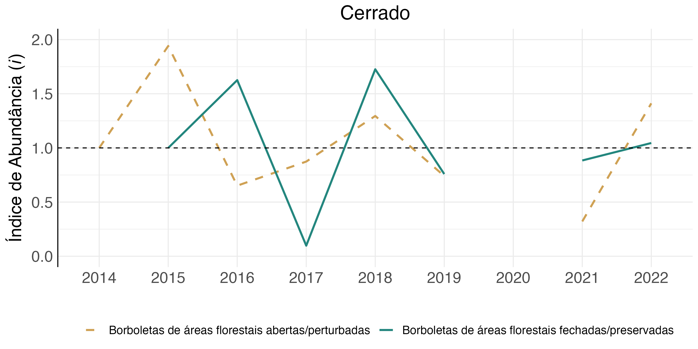
As variações populacionais instantâneas observadas para as tribos de borboletas de florestas abertas nas UCs da Mata Atlântica (Figura 4.19) explicam as grandes variações observadas no índice de tendência populacional (Figura 4.16). Já as variações instantâneas observadas para as borboletas de florestas fechadas confirmam a tendência de redução dessas populações observadas no período, pois foram observadas poucas variações positivas. Apesar desta tendência ser muito influenciada pelo grande volume de informações vindas do PARNA Iguaçu, esse padrão precisa ser monitorado para avaliar se a tendência continua.
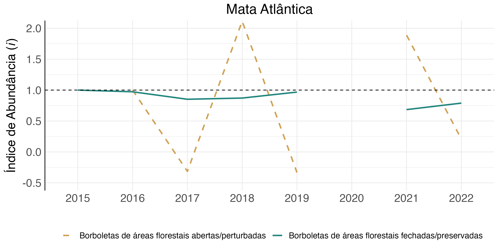
4.3.4 Destaque
4.3.4.1 Efeito da queda dos tabocais na abundância das tribos de borboletas frugívoras no sudoeste da Amazônia
Na região sudoeste da Amazônia, especialmente no estado do Acre, encontra-se uma vasta área de florestas de bambuzais do gênero Guadua, chamadas localmente de ‘tabocal’. Estas florestas se estendem por uma superfície de aproximadamente 162.000 km2, na qual uma única população de bambu pode ocupar uma área de 330 km2 (Carvalho et al. 2013). Essas populações de taboca têm um ciclo de vida que varia de 27-28 anos (Carvalho et al. 2013). A população entra em senescência após sua reprodução sexuada, inicialmente com a perda de folhas dos indivíduos e, no fim, com sua sua morte e queda. As manchas de bambu são densas e altas e, ao morrerem, deixam uma grande porção de floresta aberta.
Algumas UCs do Acre possuem extensas manchas florestas de tabocal e, nos últimos anos, foram relatadas mortes de diversas dessas populações (Marcos Silveira, comunicação pessoal, 15 de janeiro de 2024). Porém, essa mortalidade não é imediata e a senescência dessas manchas pode levar mais de um ano. Há relatos da mortalidade de extensas áreas de tabocal de 2017 a 2021 nas seguintes UCs do Programa Monitora: RESEX do Cazumbá-Iracema (2017 e 2018), RESEX do Alto Tarauacá e RESEX Chico Mendes (2018) e RESEX Riozinho da Liberdade (2021).
Para avaliar se a mortalidade das manchas de tabocal influenciou a abundância das tribos de borboletas frugívoras em cada UC, foi feito uma comparação entre anos para cada tribo, por meio do teste de Wilcoxon (ou teste U de Mann-Whitney). Este teste compara as medianas das abundâncias padronizadas pelo esforço amostral dos anos específicos com a mediana geral (a soma das medianas dos anos específicos dividida pelo número de anos). Um valor de p ≤ 0.01 indica que houve diferença significativa entre a mediana do ano específico e a mediana geral. Admitindo-se que um evento de distúrbio na floresta pode influenciar a comunidade de borboletas tanto no mesmo ano quanto no ano seguinte, essas duas possibilidades foram consideradas na interpretação dos resultados. O valor de p considerado foi de 0.01, para que apenas efeitos mais fortes fossem detectados nos testes. A sobreposição dos intervalos de confiança de cada ano indica que não houve diferença significativa da abundância. As análises também foram aplicadas às tribos de borboletas do PARNA Serra do Divisor, local considerado “controle”, por não apresentar florestas de taboca.
Na RESEX do Cazumbá-Iracema, as tribos Brassolini e Morphini, indicadoras de florestas fechadas/preservadas, mostraram um aumento significativo na mediana da abundância no ano seguinte à mortalidade dos tabocais (Figura 4.20). Este resultado é oposto ao esperado, pois com a morte dos tabocais a floresta fica mais aberta e menos propícia às espécies das tribos de floresta fechada. No entanto, a tribo Ageroniini, indicadora de florestas abertas/perturbadas, parece ter respondido à esta perturbação ambiental, visto que o aumento da mediana da abundância foi expressivo, resultando num valor quase 20 vezes maior do que o da mediana geral (Figura 4.20). Outra tribo que também pode ter respondido à queda dos tabocais foi Coeini (Figura 4.20) que, apesar de não ser uma tribo indicadora, têm espécies que são comuns no dossel e florestas abertas.
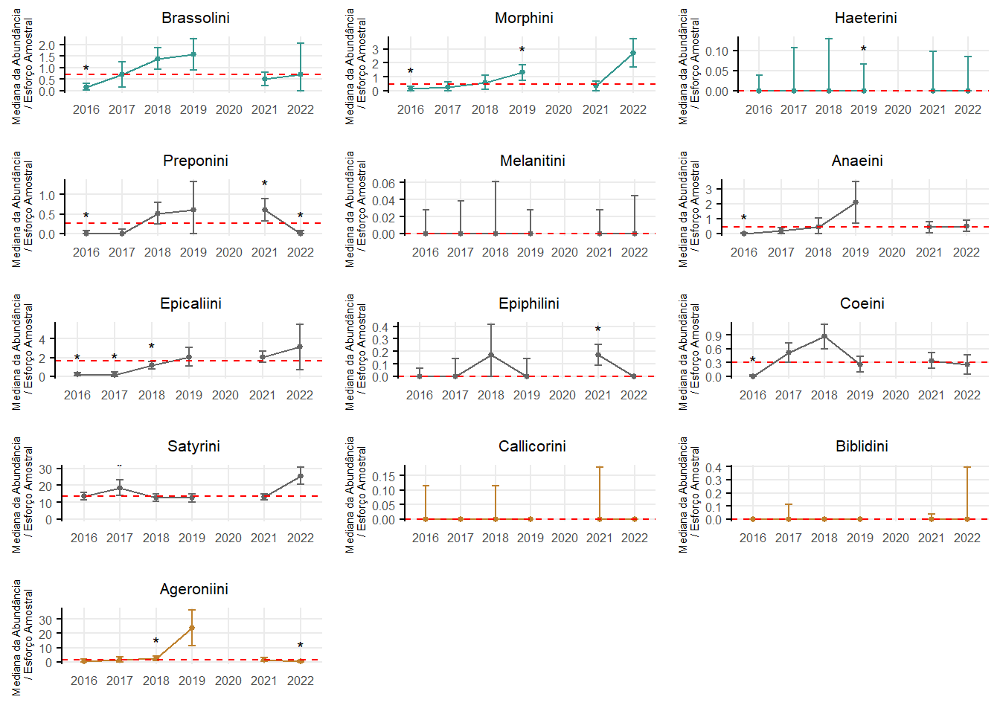
Na RESEX do Alto Tarauacá, as borboletas parecem ter respondido ao impacto da queda das florestas de tabocal no mesmo ano em que ela ocorreu. Grande parte das tribos que tiveram resultados significativamente diferentes da mediana total foi detectada em 2019. As tribos Brassolini, Coeini e Ageroniini apresentaram um aumento em suas abundâncias, enquanto a tribo Anaeini apresentou uma diminuição (Figura 4.21). Devido a pandemia, esta UC não coletou os dados em 2020, o que impossibilitou a avaliação do efeito da queda das tabocas nas borboletas após um ano. No entanto, em 2021, algumas tribos apresentaram uma abundância significativamente menor que a mediana geral. Este foi o caso das tribos Brassolini, Preponini, Anaeini e Epicaliini (Figura 4.21).
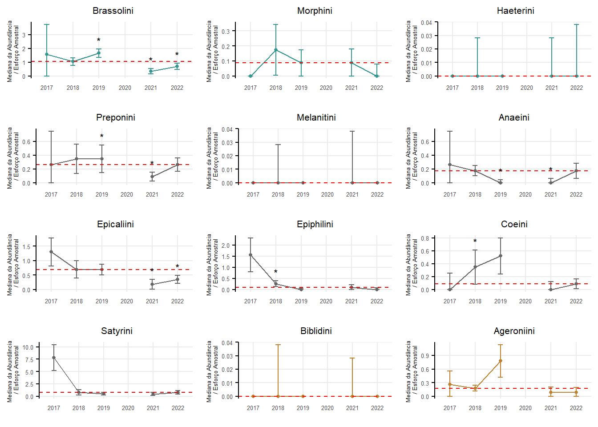
Em 2018, a RESEX Chico Mendes sofreu quedas de florestas de taboca, mas essa perturbação não pareceu afetar a abundância das tribos de borboletas naquele ano. No entanto, no ano seguinte, foi observada uma redução significativa da abundância da tribo Satyrini (Figura 4.22).
Apesar dos resultados não apresentarem significância, há um padrão de diminuição da mediana da abundância de borboletas de 2018 para 2019. Com exceção das tribos Epiphilini e Anaeini, todas as outras apresentaram uma diminuição nas abundâncias (Figura 4.22). Este é um resultado interessante, pois em 2019, diversas tribos de borboletas tiveram aumento na sua abundância em outras UCs da região Sudoeste da Amazônia (e.g., RESEX do Cazumbá-Iracema, RESEX do Alto do Tarauacá).
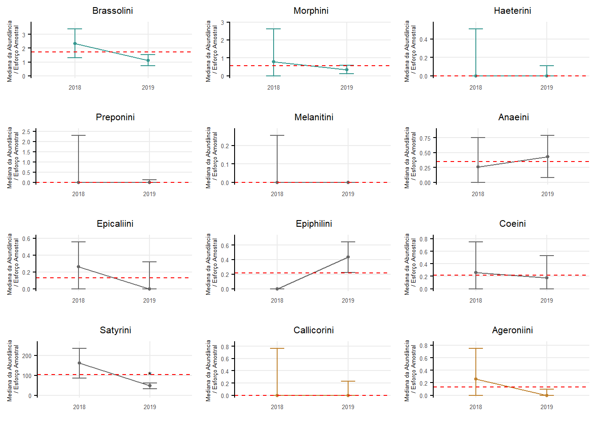
Na RESEX Riozinho da Liberdade houve quedas das florestas de taboca em 2021, mas esta perturbação parece não ter influenciado significativamente as tribos de borboletas. No entanto, a tribo Morphini apresentou uma diminuição significativa da sua abundância em 2022 (Figura 4.23).
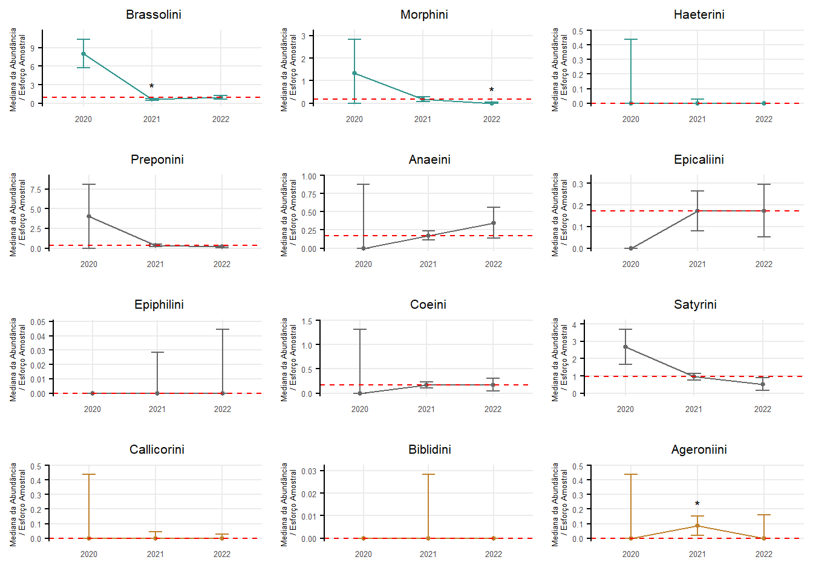
No PARNA da Serra do Divisor, pela inexistência de florestas de taboca, era esperado que não houvesse grande diferença na abundância das tribos entre anos. Duas tribos, Brassolini e Epicaliini apresentaram diminuições significativas em suas abundâncias em 2021 (Figura 4.24). Foi observado também que os valores de abundâncias foram menores em comparação aos anos anteriores (Figura 4.24).
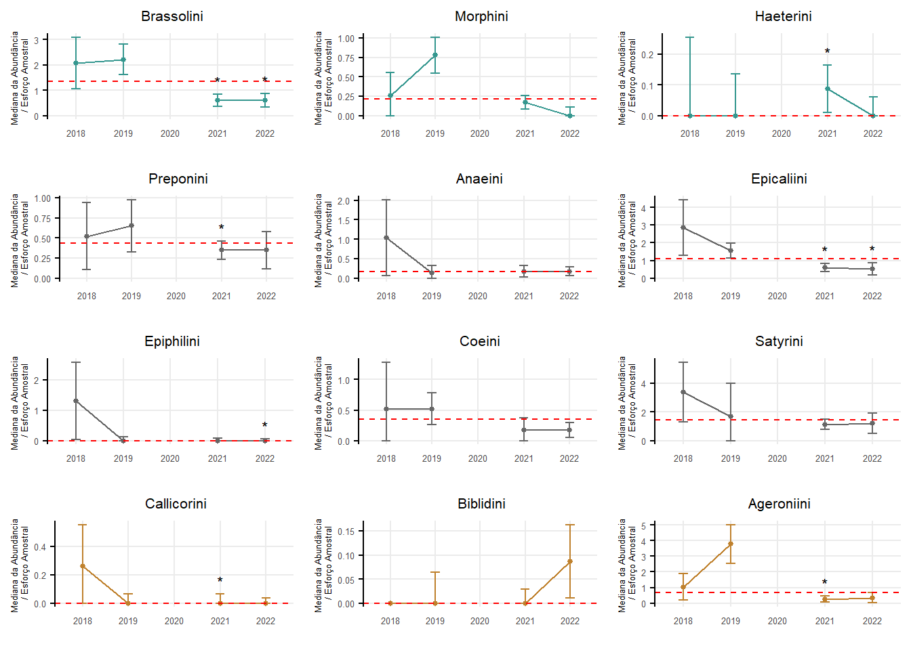
Esse padrão de diminuição das abundâncias das tribos a partir de 2021 também foi observado nas UCs anteriormente citadas. Dessa forma, sugere-se que algum evento climático/ambiental pode ter afetado as comunidades de borboletas em toda a região do estado do Acre. No entanto, a queda das florestas de taboca parece ter uma grande influência local em alguns grupos de borboletas, principalmente as tribos indicadoras, confirmando que este nível taxonômico responde a esse tipo de distúrbio.
4.4 Discussão
O Programa Monitora vem se estabelecendo como um dos maiores programas de monitoramento da biodiversidade do mundo. O Brasil, por sua extensão continental e diversos biomas ainda carentes em estudos a longo prazo, necessita, cada vez mais, do apoio federal (ARPA, FUNBIO, CNPq) e de ONGs nacionais (IPE, ECOPORÉ, FEST) e internacionais (PNUD, Gordon and Betty Moore Foundation), para a sua continuidade. Somente dessa forma é possível acumular esforços para que a biodiversidade brasileira seja conhecida e protegida. Com o Programa Monitora, além de monitorar os grupos ao longo dos anos, foi possível atualizar a distribuição geográfica de diversas espécies de borboletas, explorar cientificamente novos locais e registrar novas espécies para o Brasil (i.e., PARNA do Monte Roraima; Oliveira et al. em revisão), além de descobrir novas espécies para a ciência (novo gênero de borboleta coletado na REBIO do Tapirapé; Barbosa et al. 2023).
Nas amostragens de borboletas frugívoras do Programa Monitora, o protocolo básico foi, em geral, adequadamente aplicado, com a obtenção de importantes dados para o país. Especialmente na Amazônia, região de grandes dificuldades logísticas, novas áreas têm sido inventariadas, proporcionando, mesmo que em caráter ainda preliminar, um panorama mais amplo da diversidade. No entanto, para que o conhecimento desse grupo continue evoluindo, são funcamentais tanto o compromisso das UCs participantes com sua permanência no Programa, quanto a adesão de novas áreas, como ressaltado ao longo do capítulo. O ano de 2022 (ano limite das análises desse relatório) apresentou a maior quantidade de UCs do Programa aplicando o protocolo básico de borboletas frugívoras, destacando não somente a recuperação em relação à redução no esforço amostral causada pela baixa amostragem nos anos da pandemia de COVID-19, mas também a superação do maior esforço até então registrado, em período imediatamente anterior à pandemia. É de se esperar que o número de UCs consolidadas cresçam, não somente na Amazônia, mas também nos outros biomas, Cerrado e Mata Atlântica. Esta ampliação espacial do esforço amostral se faz necessária devido à grande relação entre esforço e número de capturas. Sendo assim, quanto maior o número de locais amostrados, maior a abundância, riqueza e diversidade de borboletas conhecidas (Freitas et al. 2024).
Um fator indispensável para um programa de monitoramento é a sua amostragem temporal (Middlebrook et al. 2023). As amostragens ao longo do tempo (anos) possibilitam detectar variações ou estabilidade na abundância, riqueza e composição de espécies em uma determinado local ou região (Mattoni et al. 2001; Van Swaay et al. 2015; Middlebrook et al. 2023; Freitas et al. 2024). Portanto, além da ampliação da amostragem em termos espaciais, deve-se, principalmente, priorizar a continuidade das amostragens ao longo dos anos, pois somente desta forma análises temporais robustas poderão ser realizadas para a detecção consistente de eventuais flutuações temporais dos indicadores escolhidos. A interpretação dos dados é dificultada pelos acréscimos, decréscimos ou substituições de UCs ao longo dos anos. Com as diferenças ambientais de cada UC, a falta de constância nas amostragens das UCs analisadas resulta em dados muitas vezes inconsistentes e dispersos, dificultando a obtenção de resultados sólidos para a região. Portanto, torna-se importante analisar a comunidade de borboletas frugívoras de cada UC separadamente para evitar a influência dos dados de outras UCs na interpretação dos dados regionais. É importante ressaltar que o Programa Monitora ainda está na fase de adequação, crescimento e consolidação. Os programas de monitoramento de borboletas em países temperados estão estabelecidos a décadas, como por exemplo o The United Kingdom Butterfly Monitoring Scheme (UKBMS), iniciado em 1976, e coletando dados anualmente em mais de 3.000 locais na Grã-Bretanha.
A tribo Satyrini tem sido a mais representativa em todas as localidades amostradas, um resultado comum, dado que é a tribo de borboletas frugívoras com mais espécies (Espeland et al. 2023). Devido à sua grande diversidade, não é considerada uma tribo indicadora de um determinado tipo florestal, pois inclui várias espécies que habitam diversos ambientes, desde florestas fechadas até florestas abertas e perturbadas. Em contraste, as borboletas indicadoras de florestas fechadas/preservadas (Brassolini, Morphini e Haeterini) e as indicadoras de florestas abertas/perturbadas (Ageroniini, Callicorini e Biblidini), parecem representar bem seus respectivos ambientes. Um resultado interessante observado foi que as borboletas indicadoras de florestas fechadas tendem a apresentar uma abundância mais constante ao longo dos anos do que as borboletas de florestas abertas/perturbadas. Esse padrão está intimamente ligado à história natural desses organismos, frequentemente relacionada ao ambiente amostrado. Como as amostragens são realizadas predominantemente em áreas protegidas florestais, espera-se que as borboletas indicadoras de florestas fechadas/preservadas sejam mais representativas do que as de florestas abertas/perturbadas. Portanto, a representatividade de borboletas de florestas abertas na Amazônia, por exemplo, indica uma mudança local drástica, como a queda de uma floresta de taboca, ou uma alteração climática intensa na região. Assim, as flutuações intensas de borboletas de florestas abertas ao longo dos anos refletem mudanças, enquanto as pequenas flutuações de borboletas indicadoras de florestas fechadas indicam estabilidade. Com base nessas observações, esses grupos se mostram ótimos modelos para a interpretação ambiental. No entanto, são necessárias pesquisas mais detalhadas focadas nas questões climáticas e ambientais, como alteração de uso da terra, degradação das florestas e deriva de agrotóxicos.
As borboletas são amplamente utilizadas como indicadores de mudanças climáticas e ambientais em todo o mundo (Van Swaay et al. 2008; Staats & Regan 2014; Roy et al. 2015; Van Swaay et al. 2015; Sanderson et al. 2021). Os monitoramentos com séries temporais mais longas vêm sendo realizados em países do norte global, especialmente na Europa. Esses monitoramentos, frequentemente, utilizam a abordagem de ciência cidadã, envolvendo a população local no registro de espécies de borboletas. Esses países têm uma diversidade de espécies muito menor que o Brasil, o que torna relativamente mais fácil a obtenção de dados ao nível de espécies. O Programa Monitora utiliza o protocolo básico de borboletas (i.e., tribo como nível taxonômico) por ser mais simples de replicar, considerando que algumas áreas podem ter mais de 100 espécies de borboletas frugívoras. Além disso, essas áreas abrigam muitas espécies crípticas, tornando a identificação a nível específico muitas vezes bastante difícil ou mesmo inviável. Assim, ressaltamos a importância de iniciativas como o Programa Monitora para avaliar a eficácia do uso de tribos de borboletas em monitoramentos e diagnósticos ambientais. Conforme citado ao longo do relatório, é importante que os indivíduos amostrados nas UCs sejam fotografados para que especialistas possam identificá-los ao nível de espécie ou morfoespécie, aumentando a assertividade e a confiabilidade dos resultados do monitoramento.
4.5 Recomendações
Boas práticas para aprimorar o Programa
Ampliar o número de unidades de conservação com aplicação do protocolo de borboletas frugívoras (Básico e Avançado) nos biomas Mata Atlântica e Cerrado, dado que esses biomas não chegaram a atingir a suficiência amostral em nenhum ano desde o início do Programa;
Na Região Climática Noroeste da Amazônia, implementar o protocolo de borboletas frugívoras em pelo menos três UCs (nove EAs), preferencialmente na ESEC Juami-Japurá, no PARNA do Pico da Neblina e na RESEX Auatí-Paraná;
Ampliar o número de UCs com aplicação do protocolo de borboletas frugívoras nas regiões do médio e baixo rio Juruá, regiões carentes de amostragem de borboletas e de extrema importância biológica. É sugerida a implementação nas RESEX Médio e Baixo Juruá e na FLONA de Tefé;
Ampliar o número de UCs com aplicação do protocolo de borboletas frugívoras na Região Climática Sudeste Amazônica de forma que seja alcançada a suficiência amostral de 18 EAs no ano. Sugere-se a implementação na FLONA de Carajás, na REBIO Nascentes da Serra do Cachimbo e na ESEC Iquê;
Consolidar a implantação do protocolo de borboletas frugívoras naquelas unidades de conservação ainda não consolidadas, de forma que as UCs contem com pelo menos três estações amostrais implantadas e em operação;
Assegurar que durante as campanhas de campo as amostragens sejam realizadas de acordo com as diretrizes estabelecidas no protocolo amostral, em especial quanto ao respeito aos períodos de coleta definidos para cada região e em relação ao esforço amostral (número de dias de amostragens em cada EA);
Assegurar que os dados coletados sejam repassados à Coordenação de acordo com as orientações definidas e num prazo razoável após a realização da campanha de campo;
Divulgar novamente às UCs os períodos indicados para amostragem nas diferentes regiões, dado que ainda há várias unidades amostrando fora desse período.
4.6 Referências
Aduse-Poku, K.; O. William; S. K. Oppong; T. Larsen; C. Ofori-Boateng & F. Molleman. 2012. Spatial and temporal variation in butterfly biodiversity in a west african forest: Lessons for establishing efficient rapid monitoring programmes. Afr. J. Ecol.
Araújo, E. da C.; L. P. Martins; M. Duarte & G. G. Azevedo. 2020. Temporal distribution of fruit-feeding butterflies (lepidoptera, nymphalidae) in the eastern extreme of the amazon region. Acta Amazon. 50:12–23.
Barbosa, E. P.; R. R. Siewert; M. A. Marı́n; P. A. Machado; I. F. Oliveira; J. A. C. Filho & A. V. L. Freitas. 2023. Description of a new genus and species of euptychiina (lepidoptera: Nymphalidae) from the brazilian amazon rainforest. Aust. Entomol. 62:310–322.
Barlow, J.; W. L. Overal; I. S. Araujo; T. A. Gardner & C. A. Peres. 2007. The value of primary, secondary and plantation forests for fruit‐feeding butterflies in the brazilian amazon. J. Appl. Ecol. 44:1001–1012.
Beirão, M. V.; F. S. Neves; C. M. Penz; P. J. De Vries & G. W. Fernandes. 2017. High butterfly beta diversity between brazilian cerrado and cerrado–caatinga transition zones. J. Insect Conserv. 21:849–860.
Bellaver, J.; H. P. Romanowski; A. Richter & C. A. Iserhard. 2023. Living on the edge: The use of fruit‐feeding butterflies to evaluate edge effect on subtropical assemblages. Austral Ecol.
Bonebrake, T. C.; L. C. Ponisio; C. L. Boggs & P. R. Ehrlich. 2010. More than just indicators: A review of tropical butterfly ecology and conservation. Biol. Conserv. 143:1831–1841.
Brito Freire, G.; D. B. andini Ribeiro; A. Carvalho Santos; T. Silva; J. P. Dias; H. P. Rodrigues & I. R. Diniz. 2022. Horizontal and vertical variation in the structure of fruit‐feeding butterfly (nymphalidae) assemblages in the brazilian cerrado. Insect Conserv. Divers. 15:226–235.
Cardoso, P.; P. S. Barton; K. Birkhofer; F. Chichorro; C. Deacon; T. Fartmann; C. S. Fukushima; R. Gaigher; J. C. Habel; C. A. Hallmann; M. J. Hill; A. Hochkirch; M. L. Kwak; S. Mammola; J. Ari Noriega; A. B. Orfinger; F. Pedraza; J. S. Pryke; F. O. Roque; J. Settele; J. P. Simaika; N. E. Stork; F. Suhling; C. Vorster & M. J. Samways. 2020. Scientists’ warning to humanity on insect extinctions. Biol. Conserv. 242:108426.
Carvalho, A. L. de; B. W. Nelson; M. C. Bianchini; D. Plagnol; T. M. Kuplich & D. C. Daly. 2013. Bamboo-dominated forests of the southwest amazon: Detection, spatial extent, life cycle length and flowering waves. PLoS One 8:e54852.
Checa, M. F.; A. Barragán; J. Rodríguez & M. Christman. 2009. Temporal abundance patterns of butterfly communities (lepidoptera: Nymphalidae) in the ecuadorian amazonia and their relationship with climate. Annales de la Société Entomologique de France 45:470–486.
Costa, F. R. C.; J. A. S. Zuanon; F. B. Baccaro; J. S. Almeida; J. da S. Menger; J. L. P. Souza; G. C. Borba; E. J. L. Esteban; V. M. Bertin; C. S. Gerolamo; A. Nogueira & C. V. de Castilho. 2020. Effects of climate change on central amazonian forests: A two decades synthesis of monitoring tropical biodiversity. Oecol. Aust. 24:317–335.
De Vries, P. J.; L. G. Alexander; I. A. Chacon & J. A. Fordyce. 2012. Similarity and difference among rainforest fruit-feeding butterfly communities in central and south america. J. Anim. Ecol. 81:472–482.
De Vries, P. J.; C. A. Hamm & J. A. Fordyce. 2016. A standardized sampling protocol for fruit-feeding butterflies (nymphalidae). Pages 139–148 Core standardized methods. Conservation International; Arlington, USA.
De Vries, P. & T. R. Walla. 2001. Species diversity and community structure in neotropical fruit-feeding butterflies. Biol. J. Linn. Soc. Lond. 74:1–15.
Eggleton, P. 2020. The state of the world’s insects. Annu. Rev. Environ. Resour. 45:61–82.
Fearnside, P. M. 2022. Amazon environmental services: Why brazil’s highway BR-319 is so damaging. Ambio 51:1367–1370.
Freitas, A. V. L.; P. E. Gueratto; J. Y. O. Carreira; G. M. Lourenço; L. T. Shirai; J. P. Santos; A. H. B. Rosa; G. B. Evora; R. R. Ramos & M. A. M. Uribe. 2024. Fruit-feeding butterfly assemblages: Trends, changes, and the importance of monitoring schemes in neotropical environments. Pages 205–233 Insect decline and conservation in the neotropics. Springer International Publishing; Cham.
Freitas, A. V. L.; C. A. Iserhard; J. P. Santos; J. Y. Oliveira Carreira; D. Bandini Ribeiro; D. H. Alves Melo; A. Rosa; O. J. Marini-Filho; G. Accacio & M. Uehara-Prado. 2014. Studies with butterfly bait traps: An overview. Revista Colombiana de Entomología 40:203–212.
Graça, M. B.; J. W. Morais; E. Franklin; P. A. C. L. Pequeno; J. L. P. Souza & A. S. Bueno. 2016. Combining taxonomic and functional approaches to unravel the spatial distribution of an amazonian butterfly community. Environ. Entomol. 45:301–309.
Harding, P. T.; J. Asher & T. J. Yates. 1995. Butterfly monitoring 1 — recording the changes. Pages 3–22 Ecology and conservation of butterflies. Springer Netherlands; Dordrecht.
Hughes, J. B.; G. C. Daily & P. R. Ehrlich. 1998. Use of fruit bait traps for monitoring of butterflies (lepidoptera: nymphalidae). Rev. Biol. Trop.:697–704.
Jakimow, B.; M. Baumann; C. Salomão; H. Bendini & P. Hostert. 2023. Deforestation and agricultural fires in South-West pará, brazil, under political changes from 2014 to 2020. J. Land Use Sci. 18:176–195.
Janzen, D. H. & W. Hallwachs. 2021. To us insectometers, it is clear that insect decline in our costa rican tropics is real, so let’s be kind to the survivors. Proc. Natl. Acad. Sci. U. S. A. 118.
Jenkins, D. W. 1983. Neotropical nymphalidae i. Revision of hamadryas. Bulletin of the Allyn Museum 81.
Levy, S. A.; F. Cammelli; J. Munger; H. K. Gibbs & R. D. Garrett. 2023. Deforestation in the brazilian amazon could be halved by scaling up the implementation of zero-deforestation cattle commitments. Glob. Environ. Change 80:102671.
Liu, J.; F. Slik; S. Zheng & D. B. Lindenmayer. 2022. Undescribed species have higher extinction risk than known species. Conserv. Lett. 15.
Luize, B. G.; D. Bauman; H. ter Steege; C. Palma-Silva; I. L. do Amaral; L. de Souza Coelho; F. D. de Almeida Matos; D. de A. Lima Filho; R. P. Salomão; F. Wittmann; C. V. Castilho; de Jesus V. C. M.; J. E. Guevara; O. L. Phillips; W. E. Magnusson; D. Sabatier; J. D. C. Revilla; J. Molino; M. V. Irume; M. P. Martins; J. R. da Silva Guimarães; J. F. Ramos; O. S. Bánki; M. T. F. Piedade; D. C. López; N. C. A. Pitman; L. O. Demarchi; J. Schöngart; E. M. M. de Leão Novo; P. N. Vargas; T. S. F. Silva; E. M. Venticinque; A. G. Manzatto; N. F. C. Reis; J. Terborgh; K. R. Casula; E. N. Honorio Coronado; A. M. Mendoza; J. C. Montero; F. R. C. Costa; T. R. Feldpausch; A. C. Quaresma; N. C. Arboleda; C. E. Zartman; T. J. Killeen; B. S. Marimon; B. H. Marimon-Junior; R. Vasquez; B. Mostacedo; R. L. Assis; C. Baraloto; D. D. do Amaral; J. Engel; P. Petronelli; H. Castellanos; M. B. de Medeiros; M. F. Simon; A. Andrade; J. L. Camargo; W. F. Laurance; S. G. W. Laurance; L. M. Rincón; J. Schietti; T. R. Sousa; E. de Sousa Farias; M. A. Lopes; J. L. L. Magalhães; H. E. M. Nascimento; H. L. de Queiroz; A. C.; A. Gerardo; R. Brienen; P. R. Stevenson; A. Araujo-Murakami; B. B. L. Cintra; T. R. Baker; Y. O. Feitosa; H. F. Mogollón; J. F. Duivenvoorden; C. A. Peres; M. R. Silman; L. V. Ferreira; J. R. Lozada; J. A. Comiskey; J. J. de Toledo; G. Damasco; N. Dávila; F. C. Draper; R. Garcı́a-Villacorta; A. Lopes; A. Vicentini; V.; F. Cornejo; A. Alonso; L. Arroyo; F. Dallmeier; V. H. F. Gomes; E. M. Jimenez; D. Neill; M. C. P. Mora; J. C. Noronha; D. P. P. de Aguiar; F. R. Barbosa; Y. K. Bredin; R. de Sá Carpanedo; F. A. Carvalho; F. C. de Souza; K. J. Feeley; R. Gribel; T. Haugaasen; J. E. Hawes; M. P. Pansonato; M. R. Paredes; D. de Jesus Rodrigues; J. Barlow; E. Berenguer; I. B. da Silva; M. J. Ferreira; J. Ferreira; P. V. A. Fine; M. C. Guedes; C. Levis; C. Licona J. Zegarra; B. E. Villa; V. A. Vos; C. Cerón; F. M. Durgante; E. Fonty; T. W. Henkel; J. E. Householder; I. Huamantupa-Chuquimaco; M. Silveira; J. Stropp; R. Thomas; D. Daly; W. Millike; G. P. Molina; T. Pennington; I. C. G. Vieira; B. W. Albuquerque; W. Campelo; A. Fuentes; B. Klitgaard; J. L. M. Pena; J. S. Tello; C. Vriesendorp; J. Chave; A. Di Fiore; R. R. Hilário; de Oliveira P. L.; J. F. Phillips; G. Rivas-Torres; T. R. van Andel; P. von Hildebrand; W. Balee; E. M. Barbosa; L. C. de Matos Bonates; H. P. D. Doza; R. Z. Gómez; T. Gonzales; G. P. G. Gonzales; B. Hoffman; A. B. Junqueira; Y. Malhi; I. P. de Andrade Miranda; L. F. M. Pinto; A. Prieto; A. Rudas; A. R. Ruschel; N. Silva; C. I. A. Vela; S. Zent; E. L. Zent; A. Cano; Y. A. C. Márquez; D. F. Correa; J. B. P. Costa; B. M. Flores; D. Galbraith; M. Holmgren; M. Kalamandeen; G. Lobo; L. T. Montenegro; M. T. Nascimento; A. A. Oliveira; M. M. Pombo; H. Ramirez-Angulo; M. Rocha; V. V. Scudeller; M. N. Umaña; G. van der Heijden; E. V. Torre; M. A. A. Reategui; C. Baider; H. Balslev; S. Cárdenas; L. F. Casas; W. Farfan-Rios; C. Ferreira; R. Linares-Palomino; C. Mendoza; I. Mesones; G. A. Parada; A. Torres-Lezama; L. E. U. Giraldo; D. Villarroel; R. Zagt; M. N. Alexiades; E. A. de Oliveira; K. Garcia-Cabrera; L. Hernandez; W. P. Cuenca; S. Pansini; D. Pauletto; F. R. Arevalo; A. F. Sampaio; E. H. Valderrama Sandoval; L. V. Gamarra & K. G. Dexter. 2024. Geography and ecology shape the phylogenetic composition of amazonian tree communities. J. Biogeogr.
Marengo, J. A.; B. Liebmann; V. E. Kousky; N. P. Filizola & I. C. Wainer. 2001. Onset and end of the rainy season in the brazilian amazon basin. Journal of Climate 14:833–852.
Mattoni, R.; T. Longcore; C. Zonneveld & V. Novotny. 2001. Analysis of transect counts to monitor population size in endangered insects: The case of the el segundo blue butterfly, euphilotes bernardino allyni. Journal of Insect Conservation 5:197–206.
Middlebrook, I.; M. S. Botham; R. Conway; R. Fox; J. Heywood; D. Noble; K. Peck; J. Salvati & D. B. Roy. 2023. United kingdom butterfly monitoring scheme report for 2022. Butterfly Conservation, UK Centre for Ecology & Hydrology, British Trust for Ornithology; Joint Nature Conservation Committee; United Kingdon, UK.
Molleman, F.; A. Kop; P. M. Brakefield; P. J. De Vries & B. J. Zwaan. 2006. Vertical and temporal patterns of biodiversity of fruit-feeding butterflies in a tropical forest in uganda. Biodivers. Conserv. 15:107–121.
Nickerson, S.; G. Chen; P. M. Fearnside; C. J. Allan; T. Hu; L. M. T. de Carvalho & K. Zhao. 2022. Forest loss is significantly higher near clustered small dams than single large dams per megawatt of hydroelectricity installed in the brazilian amazon. Environ. Res. Lett. 17:084026.
Nobre, R. A.; M. R. Kinouchi; P. A. L. Constantino; R. C. Pereira & M. Uehara-Prado. 2014. Monitoramento da biodiversidade: Roteiro metodológico de aplicação. Instituto Chico Mendes de Conservação da Biodiversidade; Brasília, DF.
Nyafwono, M.; A. Valtonen; P. Nyeko & H. Roininen. 2014. Fruit-feeding butterfly communities as indicators of forest restoration in an afro-tropical rainforest. Biol. Conserv. 174:75–83.
Oliveira, I. F.; F. B. Baccaro; F. P. Werneck & T. Haugaasen. 2023. Seasonal flooding decreases fruit-feeding butterfly species dominance and increases spatial turnover in floodplain forests of central amazonia. Ecol. Evol. 13:e9718.
Oliveira, I. F.; F. B. Baccaro; F. P. Werneck; T. Zacca & T. Haugaasen. 2021. Marked differences in butterfly assemblage composition between forest types in central amazonia, brazil. Forests 12:942.
Oliveira, I. F.; M. B. Lion & M. Z. Cardoso. 2018. A plaza too far: High contrast in butterfly biodiversity patterns between plazas and an urban reserve in brazil. Landsc. Urban Plan. 180:207–216.
Pollard, E. 1977. A method for assessing changes in the abundance of butterflies. Biol. Conserv. 12:115–134.
Pollard, E.; D. O. Elias; M. J. Skelton & J. A. Thomas. 1975. A method of assessing the abundance of butterflies in monk’s wood national nature research in 1973. Entomologist’s Gazette 26:79–87.
Ribas, C. C. & A. Aleixo. 2019. Diversity and evolution of amazonian birds: Implications for conservation and biogeography. An. Acad. Bras. Cienc. 91:e20190218.
Ribeiro, D. B.; P. I. Prado; K. S. Brown Jr. & A. V. L. Freitas. 2010. Temporal diversity patterns and phenology in fruit‐feeding butterflies in the atlantic forest. Biotropica 42:710–716.
Roy, D. B.; E. F. Ploquin; Z. Randle; K. Risely; M. S. Botham; I. Middlebrook; D. Noble; K. Cruickshanks; S. N. Freeman & T. M. Brereton. 2015. Comparison of trends in butterfly populations between monitoring schemes. J. Insect Conserv. 19:313–324.
Sampaio, A. B.; A. C. Alonso; C. Agra Iserhard; D. Bandini Ribeiro; D. F. Carvalho de Andrade; E. A. R. Carvalho Junior; G. Buss; J. M. Souza; K. T. Ribeiro; K. R. Mendes; M. L. Reis; M. S. Fialho; O. J. Marini-Filho; S. C. Galuppo & T. C. Souza. 2021. Programa nacional de monitoramento da biodiversidade: Programa monitora, subprograma terrestre, componente florestal: Relatório 2014-2018. Instituto Chico Mendes de Conservação da Biodiversidade - ICMBio; Brasília, DF.
Sanderson, C.; M. F. Braby & S. Bond. 2021. Butterflies australia: A national citizen science database for monitoring changes in the distribution and abundance of australian butterflies. Aust. Entomol. 60:111–127.
Staats, W. T. & E. C. Regan. 2014. Initial population trends from a 5-year butterfly monitoring scheme. J. Insect Conserv. 18:365–371.
Van Swaay, C. A. M.; P. Nowicki; J. Settele & A. J. Van Strien. 2008. Butterfly monitoring in europe: Methods, applications and perspectives. Biodivers. Conserv. 17:3455–3469.
Van Swaay, C.; E. Regan; M. Ling; E. Bozhinovska; M. Fernandez; O. J. Marini-Filho; B. Huertas; C.-K. Phon; A. K”orösi; J. Meerman; G. Pe’er; M. Uehara-Prado; S. Sáfián; L. Sam; J. Shuey; D. Taron; R. Terblanche & L. Underhill. 2015. Guidelines for standardised global butterfly monitoring. Page 32. Group on Earth Observations Biodiversity Observation Network; Leipzig, Germany.
Wagner, D. L. 2020. Insect declines in the anthropocene. Annual Review of Entomology 65:457–480.
Neste relatório os dados da ESEC da Terra do Meio e da RESEX do Rio Iriri foram agrupados e tratados conjuntamente, como uma única unidade de análise (um bloco).↩︎